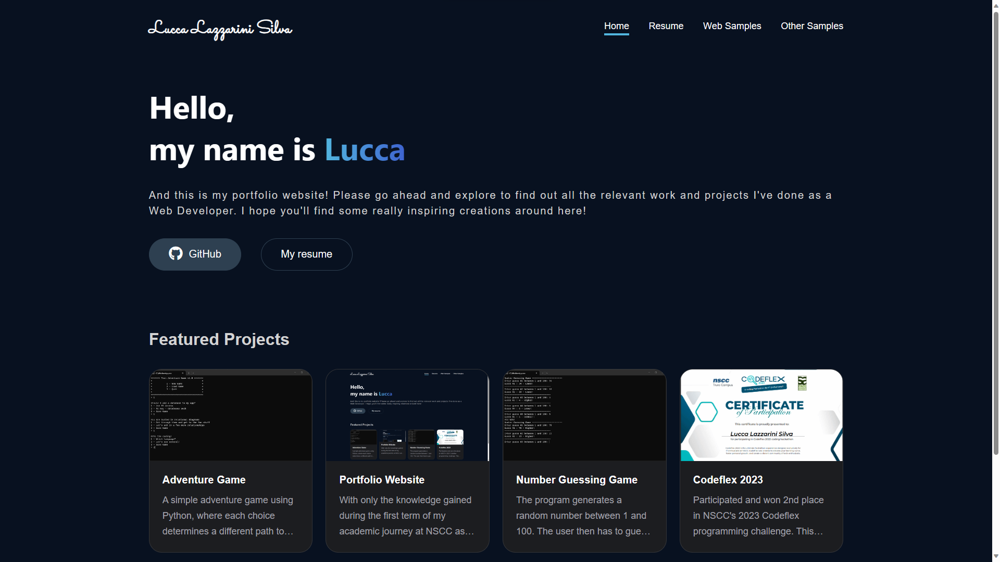
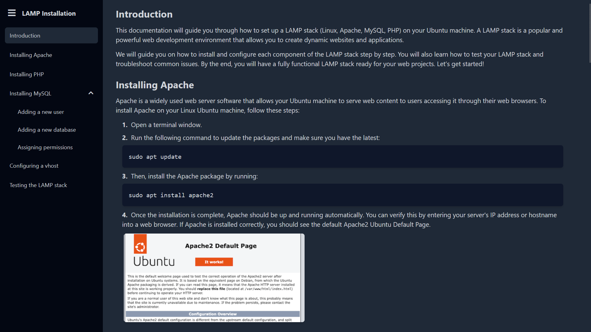
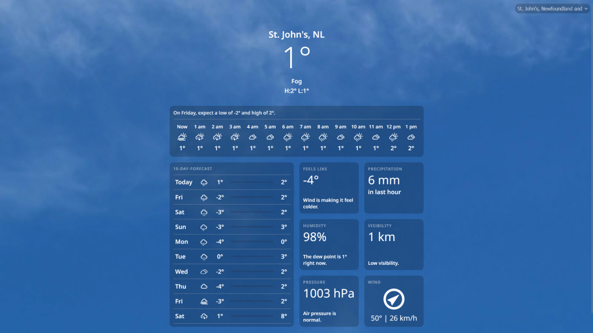
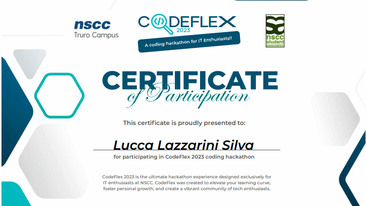

Hello,
my name is Lucca
And this is my portfolio website! Please go ahead and explore to find out all the relevant work and projects I've done as a Web Developer. I hope you'll find some really inspiring creations around here!

Featured Projects




Portfolio Website
This website! Made with only what I learned in my first year of college as well as a few other technologies I picked up along the way. This website will be constantly updated with my latest projects and relevant work as a Full-Stack Web Developer.
Documentation Website
An example of a documentation website I made during my second semester in NSCC using HTML, CSS, JavaScript and Tailwind CSS. This was the first time I built a wesbite using Tailwind. Getting the navigation selection to change depending on which section the user scrolled to was a bit of a challenge. I ended up having to learn how to use IntersectionObserver for the first time which allowed me to achieve the end result.
Weather App
This is a weather app I developed using the OpenWeather API and the OpenMeteo API at the end of my first year at NSCC. I tried to make it a clone of the Apple Weather App and in my opinion it looks pretty close.
Codeflex 2023
Participated and won 2nd place in NSCC's 2023 Codeflex programming challenge. This was a hackathon-type event spanning several hours where teams of 2 compete by completing challenges in programming languages such as Python, SQL, HTML and CSS.